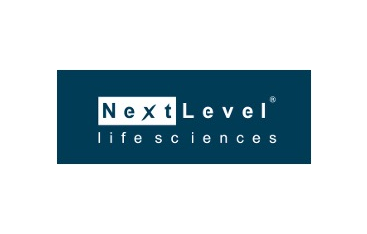
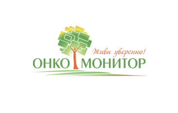
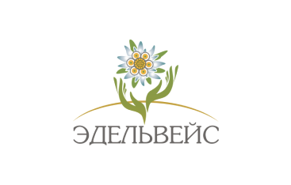
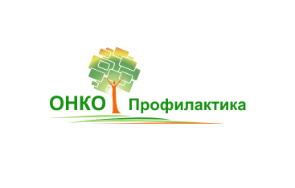
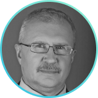
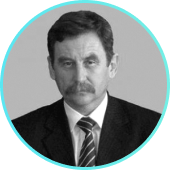

Khanov AM. Cancer Prophylaxis: Problem Solving Methods. Creative Surgery and Oncology [Internet]. 2011
[cited 2019Jun26];2:21–3. read here
Khanov AM, Kydryashova LN, Zaynullin FD. Evaluation of nutritional status for oncological patients with
generalized forms of cancer in the organs of the digestive tract using water sector analysers with AVS-01
“MEDASS” software. Creative Surgery and Oncology [Internet]. 2010 [cited 2019Jun26];1:49–52. read here
Nigmatullina KI, Kalimullina DK, Gantsev SK, Bakirov AB, Khanov AM. Quality of life evaluation for chronic
lymphocytic leukemia patients with anemia complications. Palliative Medicine and Rehabilitation [Internet].
2007 [cited 2019Jun26];:18–21. read here
Mikhaylichenko V.Yu., Trofimov P.S., Kchibekov E.A., Samarin S.A., Topchiev M.A. LACTOFERRIN AS AN
INDICATOR OF ENDOGENOUS INTOXICATION IN DIFFUSE PERITONITIS. MODERN PROBLEMS OF SCIENCE AND EDUCATION
[Internet]. 2018May;:71–. read here
Topchiev M.A., Parshin D.S. DIAGNOSTIC BIOMARKER OF AFTER OPERATION PERITONITIS. BULLETIN OF TAMBOV
UNIVERSITY SERIES: NATURAL AND TECHNICAL SCIENCES [Internet]. 2013Jan;18(1):294–5. read here
Topchiev M.A., Parshin D.S., P'yankov U.P., Topchiev A.M., Chukhnina Yu. G. OХYGENETIC MEDICAL PREPARATIONS
AND EXOGENOUS OXIDE NITROGEN IN COM- PLEX TREATMENT OF PURULENT-NECROTIC COMPLICATIONS OF DIABETIC FOOT
SYNDROME. TAVRICHESKY MEDICAL AND BIOLOGICAL HERALD. 2018Jan;21(1):148–52. read here
Topchiev M.A., Melnikov V.V., Parshin D.S., TARICULIEV SH. M., TOPCHIEV A.M. REGIONAL IMMUNO- AND NO -
THERAPY IN COMPEX TREATMENT OF EPITHELIAL COCCYGEAL WAY IN ABSCESS STAGE. KUBAN SCIENTIFIC MEDICAL HERALD
[Internet]. 2017Jan;1(162):139–42. read here
Yusupov I.A., Melnikov V.V., Astaf'ev V.V. EMERGENCY SURGICAL INTERVENTIONS IN HILOPERITONEUM. BULLETIN OF
EXPERIMENTAL AND CLINICAL SURGERY [Internet]. 2009Apr;2(4):330–2. read here
Melnikov V.V., Iscanderov Z.M., Abdulaeva Z.Sh., Cazimagomedov A.S. Regeneration of the purulent wound at
application nanooxidaised antibacterial mixed-preparations. BULLETIN OF RUSSIAN UNIVERSITY OF FRIENDSHIP OF
PEOPLES SERIES: MEDICINE [Internet]. 2009Apr;(4):104–8. read here
Topchiev MA, Parshin DS, Pyankov UP, Topchiev AM, Chukhnina YU. Oxygenic pharmaceutical drugs and exogenous
nitric oxide in combination therapy for purulent necrotic DFS complications . Tavrichesky Medical and
Biological Herald [Internet]. 2018 [cited 2019Jul4];21(1):148–52. read here
Akimov VP, Smirnov GA, Gvazaza T, Parshin DS, Nurmagomedov AG. Experience from multi-stage combination
treatment of patients with purulent necrotic DFS complications. Astrakhan Medical Journal [Internet]. 2015
[cited 2019Jul4];10(2):86-93. read here
Topchiev MA, Parshin DS. Diagnostic biomarkers of post-operative peritonitis . Tambov University Bulletin,
Natural and Technical Sciences Series [Internet]. 2013 [cited 2019Jul4];18(1):294-295. read here
Musailov V.A., Krainyukov P.E., Esipov A.V., Achkasov E.E. Clinical and economic rationale for the use of
complex antibacterial lymphatic and nitrogen monoxide therapy for peritonitis caused by diseases and
injuries of the upper urinary tract. MILITARY MEDICAL JOURNAL [Internet]. 2019; 340(2):11–7. read here
Krainyukov P.E., Esipov A.V., Lazarev A.B, Astakhov T.P. Clinical and economic analysis of the
effectiveness of combined lymphotropic and NO-therapy in the treatment of peritonitis. LIMPHA [Internet].
2018;6(2):61–2.
Musailov V.A., Krainyukov P.E., Esipov A.V., Lazarev A.B., Astakhov T.P. Analysis of "cost minimization" in
the treatment of patients with peritonitis caused by diseases and injuries of the upper urinary tract.
LIMPHA [Internet]. 2018; 6(2):62–3.
Musailov V.A., Krainyukov P.E., Esipov A.V., Lazarev A.B. To the treatment of peritonitis caused by the
pathology of the upper parts of the urinary system. MILITARY MEDICAL JOURNAL [Internet]. 2018;
339(4):19–24. read here
Musailov V.A., Krainyukov P.E., Esipov A.V. REVIEW OF 385 CASES OF PERITONITIS CAUSED BY DISEASES AND
INJURIES OF THE UPPER URINARY TRACT. INFECTIONS IN SURGERY [Internet]. 2018; 16:13–4. read here
Achkasov EE, Esipov AV, Pekshev AV, Musailov VA. Use of an Exogenous Nitric Oxide Generator for Treatment
of Peritonitis. Biomedical Engineering. 2018;52(1):64–7. Translated from Meditsinskaya Tekhnika, Vol. 52,
No. 1, Jan.-Feb., 2018, pp. 47-50.
Musailov V.A., Krainyukov P.E., Esipov AV The use of modern surgical technologies in the treatment of
peritonitis. LIMPHA [Internet]. 2017; (4):35.
Musailov V.A., Zuev VK, Moskalenko VV. Complex lymphotropic and NO-therapy of purulentinflammatory diseases
of soft tissues in the field. Journal of Military Medicine [Internet]. 2017Jun [cited 2019Jun17];
338(6):72–3. read here
Musailov V.A., Moskalenko V. V., Moskalenko V. I., Esipov A.V, Datsuk A.O. Nitrogen monoxide and
lymphotropic therapy in the treatment of peritonitis of various etiologies. Collection of articles XXXXIX of
the scientific-practical conference of the Branch No. 1 of the Federal State Budgetary Institution “3 CVKG
them. A.A. Vishnevskogo Ministry of Defense of Russia [Internet]. 2017; 152-5.
Vtorenko V.I., Esipov A.V, Boyarintsev V. V., Musailov V.A. LYMPHOGENIC METHODS AND MONOXIDE NITROGEN IN
THE TREATMENT OF PERITONITIS. MOSCOW SURGICAL JOURNAL [Internet]. 2016; (6):25–8. read here
Esipov A.V, Boyarintsev V. V., Musailov V.A. Evaluation of pain syndrome in peritonitis patients on the
background of lymphatic and nitrogen monoxide therapy. Abstracts of the International Forum “Surgeons
against terrorism. Surgery is not valid. Mistakes, dangers, complications Almanac of the Institute of
Surgery named after. A.V. Vishnevsky [Internet].2016; (2): 85.
Esipov A.V., Musailov V.A., Shishlo V.K. Study of the level of histamine in the peritoneal fluid in case of
peritonitis. MILITARY MEDICAL JOURNAL [Internet]. 2016; 337(4):58–9. read here
Musailov V.A., Moskalenko V.I., Zuev V. K., Moskalenko V. V. Plasma surgery and NO-therapy (experience,
perspectives, tasks).
Collection of articles XXXXVIII of the scientific-practical conference of the Branch No. 1 of the Federal
State Budgetary Institution “3 CVKG them. A. A. Vishnevsky Ministry of Defense of Russia. [Internet]. 2016;
205–7.
Esipov A.V., Musailov V.A., Shishlo V.K., Vtorenko V.I. EFFECT OF EXOGENOUS NITROGEN OXIDE ON PERIPHERAL
BLOOD FAGOCYTES DURING PERITONITIS. MOSCOW SURGICAL JOURNAL [Internet]. 2015; (1):5–9. read here
Musailov V. A., Esipov A.V., Yurgens L. P. Costing and economic effectiveness of devices "plason" and
"Lympha-E" in the treatment of peritonitis. NEWSLETTER LYMPHOLOGY [Internet]. 2014; (2):8–13. read here
Musailov V. A. EVALUATION OF QUALITY OF LIFE IN PATIENTS WITH PERITONITIS AGAINST THE BACKGROUND OF NO- AND
LYMPHATIC THERAPY. SURGICAL PRACTICE [Internet]. 2015; (2):26–30. read here
Musailov V. A. THE MODERN TREATMENT OF PERITONITIS, CAUSED BY DISEASES AND INJURIES OF UPPER URINARY TRACT.
2014; (11):13–8. read here
Esipov A.V., Musailov V.A., Lisovskiy A. V., Moskalenko V. I. EFFECT OF NITROGEN MONOXIDE WARNING WOUND
INFECTION. NEWSLETTER LYMPHOLOGY [Internet]. 2014; (1):4–9. read here
Musailov V.A., Esipov A.V., Guriev G.S., Shishlo V.K. Nitrogen monoxide in the prevention and treatment of
postoperative complications.Proceedings of the 5th Congress of Lympology in Russia. 3rd International
Scientific and Practical Conference on Clinical Lymphology "LIFA-2014". [Internet]. 2014; 39–45.br />
Musailov V.A., Lisovskiy A. V., Moskalenko V. V. NO-TREATMENT AND LYMPHOTROPIC ANTIBIOTIC PREVENTION OF
SURGICAL INFECTION. NEWSLETTER LYMPHOLOGY [Internet]. 2013; (4):36–9. read here
Results of the use of complex NO- and lymphatic therapy in the treatment of peritonitis. Proceedings of the
5th Congress of Lympology in Russia. 3rd International Scientific and Practical Conference on Clinical
Lymphology "LIFA-2014". [Internet]. 2014; 72–3.
Musailov V.A., Efimenko N.A., Esipov A.V., Moskalenko V.V. The use of plasma surgery in military medicine.
Journal of Military Medicine [Internet]. 2014Jun [cited 2019Jun17]; 335(6):34–8. read here
Vyrenkov Yu.E., Esipov A.V., Musailov V.A., Moskalenko V.V., Shishlo V.K., Povalyaev A.V. The application
of nitrogen oxide in the surgical practice. PHYSIOTHERAPY, BALNEOLOGY AND REHABILITATION [Internet]. 2014;
(1):33–40. read here
Musailov V.A., Lisovskiy A. V., Moskalenko V. V. NO-TREATMENT AND LYMPHOTROPIC ANTIBIOTIC PREVENTION OF
SURGICAL INFECTION. NEWSLETTER LYMPHOLOGY [Internet]. 2013; (4):36–9. read here
Esipov A.V., Musailov V.A., Moskalenko V.V. EXPERIMENTAL AND CLINICAL ASPECTS OF THE INFLUENCE OF NITROGEN
MONOXIDE ON LYMPHATIC SYSTEM AT PYOINFLAMMATORY PROCESSES OF VARIOUS GENESIS. SURGEON [Internet]. 2013;
(5):65–70. read here
Musailov V.A. IMMUNOLOGICAL PATTERN ON THE BACKGROUND OF NO-THERAPY. NEWSLETTER LYMPHOLOGY [Internet].
2013; (3):11–2. read here
Musailov V.A., Moskalenko V.A., Moskalenko V.V. ECONOMIC ANALYSIS OF EFFICIENCY OF COMPLEX LYMPHOTROPIC AND
NO-THERAPY. NEWSLETTER LYMPHOLOGY [Internet]. 2013; (3):12–3. read here
Musailov V.A., Moskalenko V.A., Moskalenko V.V., Shishlo V.K. Experimental studies of the effect of NO on
the wound process. Proceedings of the III Congress of Surgeons of the South of Russia with international
participation. Astrakhan: Publishing House of Astrakhan Medical Academy [Internet]. 2013; 146–7.
Esipov A.V., Musailov V.A., Moskalenko V.V., Moskalenko V.A., Shishlo V.K. Complex treatment of peritonitis
with the use of NO-therapy. Proceedings of the III Congress of Surgeons of the South of Russia with
international participation. Astrakhan: Publishing House of Astrakhan Medical Academy [Internet]. 2013;
73–4.
Vyrenkov Yu.E., Esipov A.V., Musailov V.A., Moskalenko V.V., Moskalenko V.A., Shishlo V.K. Experience of
using NO-therapy in surgical practice. Collection of articles XXXXIV scientific-practical conference of
doctors branch number 1 FGKU "GVKG them. N. N. Burdenko Ministry of Defense of Russia" [Internet]. 2013;
93–5.
Musailov V.A., Esipov A.V., Koridze A.D., Moskalenko V.V., Volkov A.N., Shishlo V.K. Combined NO- and
lymphatic therapy in urological and surgical practice. Collection of articles XXXXIV scientific-practical
conference of doctors branch number 1 FGKU "GVKG them. N. N. Burdenko Ministry of Defense of Russia"
[Internet]. 2013; 96-9.
Musailov V.A., Vtorenko V.I., Esipov A.V, Shishlo V.K. Comprehensive NO- and lymphatic therapy in the
treatment of peritonitis of various etiologies. Moscow Surgical Journal. Moscow Surgical Journal [Internet].
2012; 28(6):5–20.
Musailov V.A., Esipov A.V., Shishlo V.K. Synergism of NO- and lymphatic therapy in abdominal surgery.
Treatment of peritonitis and its complications: Materials of the city scientific-practical conference.
Volume 227. M.: Institute of ambulance them. N.V. Sklifosovsky [Internet]. 2012; 67-8.
Musailov V.A. The study of the microbial composition of peritoneal fluid in the combined lymphatic and
NO-therapy of patients with peritonitis caused by diseases and injuries of the urinary tract. Treatment of
peritonitis and its complications: Materials of the city scientific-practical conference. Volume 227. M .:
Institute of ambulance them. N.V. Sklifosovsky [Internet]. 2012; 70-1.
Vyrenkov Yu.E., Esipov A.V., Musailov V.A., Moskalenko V.A. Comprehensive NO- and lymphatic therapy in
patients with peritonitis caused by diseases and injuries of the urinary tract. Bulletin of Lymphology
[Internet]. 2012; (2):7–9.
Musailov V.A., Esipov A.V., Shishlo V.K., Moskalenko V.V. The interaction of NO- and lymphatic therapy in
surgical practice. Bulletin of Lymphology [Internet]. 2012; (2):9-11.
Musailov V.A., Shishlo V.K., Choi G.K., Codina T.V. The study of the cellular composition of peritoneal
fluid in patients with peritonitis caused by diseases and injuries of the urinary tract on the background of
complex NO- and lymphatic therapy. Bulletin of Lymphology [Internet]. 2012; (2):13–4.
Physicochemical parameters of NO-containing gas flow affect wound healing therapy. An experimental study.
European Journal of Pharmaceutical Sciences. 2019 .- Vol. 128 .- С. 193 - 201
read
here
Study of plasma-chemical NO-containing gas flow for treatment of wounds and inflammatory processes. Nitric
Oxide - Biology and Chemistry. 2018 .- Vol. 73 .- С. 74 - 80 read
here
PEKSHEV A.V., VAGAPOV A.B., SHARAPOV N.A., SHEKHTER A.B., VANIN A.F. STUDY OF PLASMA-CHEMICAL NO-CONTAINING
GAS FLOW FOR TREATMENT OF WOUNDS AND INFLAMMATORY PROCESSES. NITRIC OXIDE [Internet]. 2018;73:74–80. read here
Achkasov EE, Esipov AV, Pekshev AV, Musailov VA. Use of an Exogenous Nitric Oxide Generator for Treatment
of Peritonitis. Biomedical Engineering. 2018;52(1):64–7. Translated from Meditsinskaya Tekhnika, Vol. 52,
No. 1, Jan.-Feb., 2018, pp. 47-50.
Abramov A.A., Barinov S.M., Pekshev A.V., et al. “TUMORS OF THE ORGANS OF THE HEAD AND NECK: TECHNOLOGIES
FOR THE TREATMENT AND REHABILITATION OF PATIENTS: RECONSTRUCTION OF TISSUES.” Clinical Center for
Otolaryngology FMBA, 2016, pp. 1–513.
Marakhonich L.A., Bordenyuk V.I., Pekshev A.V., Vagapov A.B. “Effective Clinical Use of No-Containing Gas
Flow Generated by Air-Plasma in Outpatient Settings.” Hospital Replacement Technologies: Ambulatory
Surgery., no. 1-2, 2016, pp. 97–101. read here
Vasilets V.N., Shekhter A.B., Guller A.E., Pekshev A.V. AIR PLASMA-GENERATED NITRIC OXIDE IN TREATMENT OF
SKIN SCARS AND ARTICULAR MUSCULOSKELETAL DISORDERS: PRELIMINARY REVIEW OF OBSERVATIONS Clinical Plasma
Medicine. 2015. Т. 3. № 1. С. 32-39
Sharapov N.A., Chukanov V.I., Distanov R.R., Kozlov N.P., Pekshev A.V., Homenko V.A., Vagapov A.B.,
Dusalieva R.R. Study of air-plasma chemical reactor for a new medical device. ENGINEERING JOURNAL: SCIENCE
AND INNOVATION [Internet]. 2013;10(22):32–. read here
Vagapov A.B. , Geraskin I.S., Kozlov N.P., Pekshev A.V., Sharapov N.A. AIR-PLASMA MEDICAL DEVICES FOR
SURGERY AND THERAPY. BULLETIN OF MOSCOW STATE TECHNICAL UNIVERSITY IM NE BAUMANA SERIES: MECHANICAL
ENGINEERING [Internet]. 2011;(S3):97–106. read here
Gundorova R.A., Shekhter A.B. , Kvasha O.I., Pekshev A.V., Feraizi E. NO-therapy in the treatment of the
eyelid wounds. OPHTHALMOSURGERY [Internet]. 2010;(3):28–32. read here
Davydov A.I., Lipatov D.V., Kamrukov A.S., Khanin A.G., Pekshev A.V., Chakvetadze L.B., Usacheva O.N. The
use of high-intensity optical pulse radiation and exogenic nitrogen monoxide in a complex treatment of
patients with purulent adnexitis. GYNECOLOGY, OBSTETRICS AND PERINATOLOGY ISSUES [Internet].
2007;6(1):14–7. read here
Davydov A.I. Strizhakov A.N., Chakvetadze L., Shekhter A.B., Pekshev A.V., Klindukhov I.A. A
clinicomorphological analysis of the effect of new-generation plasmatrones on uterine and ovarian tissues in
laparoscopic surgery. GYNECOLOGY, OBSTETRICS AND PERINATOLOGY ISSUES [Internet]. 2007;6(5):5–10. read here
Vagapov А.В., Kozlov N.P., Pekshev A.V., Sharapov N.A. Plasma Equipment for Surgery and Therapy:
Development, Designing and Wide Application in Medical Practice. BIOMEDICAL RADIO ELECTRONICS [Internet].
2007;(6):30–8. read here
Reshetov I.V., Pekshev A.V., Matorin O.V., Kravtsov S.A., Polyakov A.P. OPPORTUNITIES FOR THE USE OF
AIR-PLASMA FLOWS AT IMPLEMENTATION OF RECONSTRUCTIVE AND PLASTIC OPERATIONS IN LOCAL DISTRIBUTED TUMORS OF
THE ORGANS OF THE HEAD AND NECK. Siberian Oncology Journal. 2006;(S1):101–2.
SHEKHTER A.B., RUDENKO T.G., SEREZHENKOV V.A., VANIN A.F., PEKSHEV A.V. BENEFICIAL EFFECT OF GASEOUS NITRIC
OXIDE ON THE HEALING OF SKIN WOUNDS. NITRIC OXIDE [Internet]. 2005;12(4):210–9. read here
Shekhter A.B., Serezhenkov V.A., Rudenko T.Y., Pekshev A.V., Vanin A.F. Bulletin of Experimental Biology
and Medicine. 2005. Т. 12. С. 210.
Davydov A.I., Kuchukhidze S.T., Shekhter A.B., Khanin A.G., Pekshev A.V., Pankratov V.V. Clinical
evaluation of intraoperative application of air-plasma flow enriched by nitrogen monoxide in operations on
the uterus and adnexa. GYNECOLOGY, OBSTETRICS AND PERINATOLOGY ISSUES [Internet]. 2004;3(4):12–7. read here
Zuev V.M., Urazgil'deeva Eh.Kh., Pekshev A.V., Abojants R.K., Shekhter A.B., Rudenko T.G. METHOD FOR
TREATING PSEUDOEROSION OF UTERINE CERVIX. Type: patent for invention Patent Number: 2217150 [Internet].
2003; read here
Chesnokova N.В., Gundorova R.A., Kvasha O.I., Bykov V.P., Davydova N.G., Beznos O.V., Stolyarova E.P.,
Kosakyan S.M., Gorbacheva O.A., Shekhter А.В., Pekshev A.V. An experimental substantiation of nitric-oxide
containing gas flow in the treatment of eye traumas. BULLETIN OF THE RUSSIAN ACADEMY OF MEDICAL SCIENCES
[Internet]. 2003;(5):40–4. read here
Chirikova E.G., Shulutko A.M., Shekhter А.В., Pekshev A.V., Mansurova G.Т., Krylov A. Yu. The application
of exoge nous nitric oxide in the complex treatment of trophic ulcers of the venous etiology. RUSSIAN
MEDICAL JOURNAL [Internet]. 2003;(3):14–. read here
Chesnokova, NB, Pekshev, AV, Kuznetsova, T.P. METHOD OF TREATING INFLAMMATORY DISEASES AND DAMAGE TO FRONT
EYE SURFACE patent for invention RUS 2178684 07.20.1999 read here
Vagapov AB, Grachev SV, Kozlov NP, Pekshev AV, Shekhter AB METHOD AND DEVICE FOR FORMING NO-CONTAINING GAS
FLOW FOR IMPACT ON THE BIOLOGICAL OBJECT patent for invention RUS 2183474 09.02.2001
Kabisov R.K., Kudryavtsev B.P., Pekshev A.V., Sharapov N.A. METHOD OF IMPACT ON BIOLOGICAL TISSUE BY PLASMA
FLOW patent for invention RUS 2183480 02.06.1997
Kozlov NP, Malikov V.N., Pekshev A.V., Suslov V.I. DEVICE FOR PLASMA EXPOSURE TO THE BIOLOGICAL TISSUE
patent for invention RUS 2183946 15.10.1997
Chesnokova NB, Pekshev A.V., Davydova N.G., Kvasha OI, Gorbacheva O.A., Kosakyan S.M., Galchin A.A. METHOD
OF IMPACT ON MICROCIRCULATION DAMAGES OF FORWARDING Eye Cut patent for invention RUS 2192813 05.03.2001
Chesnokova NB, Pekshev A.V., Kvasha OI, Kosakyan S.M., Gorbacheva O.A., Galchin A.A. METHOD OF TREATMENT OF
ETHYTELIAL RAS patent for invention RUS 2192814 05.03.2001
Davydov A.I., Strizhakov A.N., Pekshev A.V., Kuchukhidze S.T., Klindukhov I.A. Possibilities and Prospects
of Plasma Endosurgery with Generation of Nitrogen Monoxide in Operations on the Womb and Uterine Appendages.
GYNECOLOGY, OBSTETRICS AND PERINATOLOGY ISSUES [Internet]. 2002;1(2):57–60. read here
Kabisov R.K., Kozlov N.P., Pekshev A.V., Perov Yu.L., Shekhter A. B. METHOD OF TREATMENT AND/OR PROPHYLAXIS
OF INVADED SOFT TISSUES OF BODY patent for invention RUS 2174398 04/02/1998
Krotovsky G.S., Pekshev A.V., Zudin A.M., Uchkin I.G., Mosesov A.G. THERAPY WITH EXOGENOUS NITROGEN OXIDE -
A NEW METHOD FOR STIMULATING HEALING OF TROPHIC SKIN DEFECTS AGAINST A CHRONIC VENOUS BACKGROUND
INSUFFICIENCY Thoracic and cardiovascular surgery. 2001. No. 3. P. 37.
Pekshev, AV, Shekhter, AB, Starostin, OI Pediatric surgery. 2001. No. 1. P. 37.
Khrupkin V.I., Zudilin A.V., Pisarenko L.V., Pekshev A.V., Vaganov A.B. LOCAL APPLICATION OF LOW ENERGY AIR
AND ARGON PLASMA IN TREATMENT OF PURULENT RAS AND TROPHIC ULCERS Bulletin of Surgery them. I.I. Grekov.
2001. T. 160. № 2. S. 39.
PROSPECTS OF DEVELOPMENT OF PLASMA SURGERY IN MILITARY MEDICINE Marakhonich LA, Pekshev A.V., Efimenko
N.A., Moskalenko V.I. Military Medical Journal. 2001. No. 4. P. 32.
USE OF A NEW BIOLOGICAL FACTOR - EXOGENOUS NITRIC OXIDE - DURING SURGICAL TREATMENT OF PERIODONTITIS
Grigor'Ian A.S., Grudianov A.I., Frolova O.A., Antipova Z.P., Erokhin A.I., Shekhter A.B. Dentistry. 2001.
T. 80. p. 80.
Kabisov R.K., Sokolov V.V., Shekhter A.B., Pekshev A.V., Maneilova M.V. FIRST EXPERIENCE OF EXOGENOUS
NO-THERAPY APPLICATION FOR TREATMENT POSTOPERATIVE RAS and BOOT REACTIONS IN CANCER PATIENTS Russian
Oncology Journal. 2000. № 1. P. 24.
Reshetov I.V., Kabisov R.K., Shekhter A.B., Pekshev A.V., Maneilova M.V. APPLICATION OF PLAZON AIR-PLASMA
MACHINE IN MODES COAGULATION AND NO-THERAPY FOR RECONSTRUCTIVE-PLASTIC OPERATIONS IN CANCER PATIENTS Annals
of plastic, reconstructive and aesthetic surgery. 2000. No. 4. S. 24.
Shekhter A.B., Kabisov R.K., Pekshev A.V., Kozlov N.P., Perov Y.L. EXPERIMENTAL AND CLINICAL VALIDATION OF
PLASMADYNAMIC THERAPY OF WOUNDS WITH NITRIC OXIDE Bulletin of Experimental Biology and Medicine. 1998. Т.
126. № 2. С. 829-834. read here
Shekhter AB, Kabisov R.K., Pekshev A.V. EXPERIMENTAL AND CLINICAL JUSTIFICATION OF PLASMODYNAMIC THERAPY
AND RAS WITH NITROGEN OXIDE Bulletin of experimental biology and medicine. 1998. № 126. S. 392.
Khrupkin V.I., Pisarenko L.V., Slostin S.M. USE OF PHYSICAL PLASMA IN SURGERY OF THE RAS AND PRE-EYE
COMPLICATIONS Bulletin of Surgery them. I.I. Grekov. 1998. T. 157. No. 2. S. 43.
Zhilyaev E.G., Khrupky V.I., Marakhonich I.A., Kudryavtsev B.P., Pisarenko I.V., Pekshev A.V., Sleptsov ON.
PROSPECTS OF APPLICATION OF AIR PLASMA FLOWS IN MEDICINE Military Medical Journal. 1998. T. 319. p. 46.
KOZLOV NP, VAGAPOV AB, MALIKOV VN, SUSLOV V.I., PEXHEV A.V. Investigation of the physical basic of the
hight-effective conversion laser irradiation energy into electricity. Research Report No 95-02-05210
(Russian Foundation for Basic Research) [Internet]. 1995; read here
Pekshev A.V. FIRST EXPERIENCE OF EXOGENOUS NO-THERAPY APPLICATION FOR THE TREATMENT OF POSTOPERATIVE RAS
AND RADIATIVE REACTIONS IN CANCER PATIENTS Russian Oncology Journal. 1992. № 1. S. 24.
Kozlov NP, Pekshev AV, Protasov Yu.S., Suslov V.I. INTERACTION OF LASER RADIATION WITH LOW-TEMPERATURE
PLASMA AND THERMOEMISSION ENERGY CONVERSION In the collection: Radiation plasmodynamics. Materials of the
All-Union Symposium on radiation plasmodynamics. Edited by Professor of Physics and Mathematics Yu.S.
Protasov. 1991. p. 462-498.
Kozlov NP, Pekshev AV, Protasov Yu.S., Suslov V.I. THERMOPHYSICAL ASPECTS OF THE PROBLEM OF CREATION OF
PLASMA SURGICAL INSTALLATIONS In the collection: Radiation plasmodynamics. Materials of the All-Union
Symposium on radiation plasmodynamics. Edited by Professor of Physics and Mathematics Yu.S. Protasov. 1991.
p. 498-552.
Kudryavtsev B.P., Moskalik V.A., Klepikov S.V., Yarosh V.N., Kiselev E.D., Pekshev A.V. OPPORTUNITIES AND
PROSPECTS OF APPLICATION OF PLASMA FLOWS IN SURGERY Military Medical Journal. 1991. № 11. S. 21.
Shekhter AB, Kabisov R.K., Pekshev A.V. EXPERIMENTAL AND CLINICAL JUSTIFICATION OF PLASMODYNAMIC THERAPY
RAS OXIDE NITROGEN Bulletin of experimental biology and medicine. 1990. No. 8. S. 210.
Brekhov E.I., Kozlov N.P., Rebizov V.I., Tartynskiǐ S.I., Suslov N.I., Pekeshev A.V., Naidenko M.V.
EXPERIMENTAL AND CLINICAL STUDIES AND PROSPECTS OF USING PLASMA FLOWS Surgery. Journal them. N.I. Pirogov.
1989. V. 7. S. 94.
Kozlov NP, Pekshev AV, Protasov Yu.S., Suslov N.I. NUMERICAL RESEARCH OF THE ELECTRIC ARC IN THE
MICROPLASMATRON CHANNEL News of the Siberian Branch of the USSR Academy of Sciences. A series of technical
sciences. 1989. № 3. S. 99.
Kozlov NB, Protasov Yu.S., Pekshev A.V. RESEARCH AND DEVELOPMENT OF PLASMA DEVICES FOR EXPOSURE TO
BIOLOGICAL TISSUES: THE WORKS OF VNIIIMT. 1987. № 4. S. 8.
Skobelkin OK, Brekhov E.I., Litvin GD, Tartynsky S.I., Rebizov V.Yu., Eliseenko V.I., Pekshev N.V., Suslov
N.I. APPLICATION OF PLASMA INSTALLATIONS IN THE SURGERY OF PARAHIMATIC ORGANS Surgery. Journal them. N.I.
Pirogov. 1987. Number 5. S. 75.
Physicochemical parameters of NO-containing gas flow affect wound healing therapy. An experimental study.
European Journal of Pharmaceutical Sciences. 2019 .- Vol. 128 .- С. 193 - 201
read
here
Study of plasma-chemical NO-containing gas flow for treatment of wounds and inflammatory processes. Nitric
Oxide - Biology and Chemistry. 2018 .- Vol. 73 .- С. 74 - 80 read
here
PEKSHEV A.V., VAGAPOV A.B., SHARAPOV N.A., SHEKHTER A.B., VANIN A.F. STUDY OF PLASMA-CHEMICAL NO-CONTAINING
GAS FLOW FOR TREATMENT OF WOUNDS AND INFLAMMATORY PROCESSES. NITRIC OXIDE [Internet]. 2018;73:74–80. read here
Sharapov N.A., Khinkis A.V., Gadzhikhalilova S.I., Melnik T.V., Parfenov A.V. STRUCTURE OF PULSE DISCHARGE
WITH VARIABLE REPETITION RATE. QUESTIONS OF NUCLEAR SCIENCE AND TECHNOLOGY SERIES: THERMOUADER SYNTHESIS
[Internet]. 2017;40(2):61–4. read here
Sharapov N.A., Chukanov V.I., Distanov R.R., Kozlov N.P., Pekshev A.V., Homenko V.A., Vagapov A.B.,
Dusalieva R.R. Study of air-plasma chemical reactor for a new medical device. ENGINEERING JOURNAL: SCIENCE
AND INNOVATION [Internet]. 2013;10(22):32–. read here
Vagapov A.B. , Geraskin I.S., Kozlov N.P., Pekshev A.V., Sharapov N.A. AIR-PLASMA MEDICAL DEVICES FOR
SURGERY AND THERAPY. BULLETIN OF MOSCOW STATE TECHNICAL UNIVERSITY IM NE BAUMANA SERIES: MECHANICAL
ENGINEERING [Internet]. 2011;(S3):97–106. read here
Vagapov А.В., Kozlov N.P., Pekshev A.V., Sharapov N.A. Plasma Equipment for Surgery and Therapy:
Development, Designing and Wide Application in Medical Practice. BIOMEDICAL RADIO ELECTRONICS [Internet].
2007;(6):30–8. read here
Kabisov R.K., Kudryavtsev B.P., Pekshev A.V., Sharapov N.A. METHOD OF IMPACT ON BIOLOGICAL TISSUE BY PLASMA
FLOW patent for invention RUS 2183480 02.06.1997
Physicochemical parameters of NO-containing gas flow affect wound healing therapy. An experimental study.
European Journal of Pharmaceutical Sciences. 2019 .- Vol. 128 .- С. 193 - 201 read
here
Study of plasma-chemical NO-containing gas flow for treatment of wounds and inflammatory processes. Nitric
Oxide - Biology and Chemistry. 2018 .- Vol. 73 .- С. 74 - 80 read
here
PEKSHEV A.V., VAGAPOV A.B., SHARAPOV N.A., SHEKHTER A.B., VANIN A.F. STUDY OF PLASMA-CHEMICAL NO-CONTAINING
GAS FLOW FOR TREATMENT OF WOUNDS AND INFLAMMATORY PROCESSES. NITRIC OXIDE [Internet]. 2018;73:74–80. read here
Marakhonich L.A., Bordenyuk V.I., Pekshev A.V., Vagapov A.B. “Effective Clinical Use of No-Containing Gas
Flow Generated by Air-Plasma in Outpatient Settings.” Hospital Replacement Technologies: Ambulatory
Surgery., no. 1-2, 2016, pp. 97–101. read here
Sharapov N.A., Chukanov V.I., Distanov R.R., Kozlov N.P., Pekshev A.V., Homenko V.A., Vagapov A.B.,
Dusalieva R.R. Study of air-plasma chemical reactor for a new medical device. ENGINEERING JOURNAL: SCIENCE
AND INNOVATION [Internet]. 2013;10(22):32–. read here
Vagapov A.B. , Geraskin I.S., Kozlov N.P., Pekshev A.V., Sharapov N.A. AIR-PLASMA MEDICAL DEVICES FOR
SURGERY AND THERAPY. BULLETIN OF MOSCOW STATE TECHNICAL UNIVERSITY IM NE BAUMANA SERIES: MECHANICAL
ENGINEERING [Internet]. 2011;(S3):97–106. read here
Vagapov А.В., Kozlov N.P., Pekshev A.V., Sharapov N.A. Plasma Equipment for Surgery and Therapy:
Development, Designing and Wide Application in Medical Practice. BIOMEDICAL RADIO ELECTRONICS [Internet].
2007;(6):30–8. read here
Vagapov AB, Grachev SV, Kozlov NP, Pekshev AV, Shekhter AB METHOD AND DEVICE FOR FORMING NO-CONTAINING GAS
FLOW FOR IMPACT ON THE BIOLOGICAL OBJECT patent for invention RUS 2183474 09.02.2001
KOZLOV NP, VAGAPOV AB, MALIKOV VN, SUSLOV V.I., PEXHEV A.V. Investigation of the physical basic of the
hight-effective conversion laser irradiation energy into electricity. Research Report No 95-02-05210
(Russian Foundation for Basic Research) [Internet]. 1995; read here
ALEKSEEV D.N., VAGAPOV A.B., MARAKHTANOV M.K., PIL'NIKOV A.V., SUSLOV V.I. INVESTIGATION OF THE ION BEAM OF
A PLASMA ACCELERATOR WITH AZIMUTHAL DRIFT OF ELECTRONS BY AN OPTICAL METHOD. JOURNAL OF APPLIED SPECTROSCOPY
[Internet]. 1992;56(5-6):523–6. read here
Alekseev D.N., Vagapov A.B., Marakhtanov M.K., Pil'nikov A.V., Suslov V.I. RESEARCH OF ION BEAM OF PLASMA
ACCELERATOR WITH AZIMUTAL DRIFT OF ELECTRONS BY OPTICAL METHOD. Journal of Applied Spectroscopy.
1992;56(5-6):843–.
Soloviev, V. Fintech Ecosystem and Landscape in Russia // Journal of Reviews on Global Economics. — 2018. —
Vol. 7. — Special Issue. — Banking System and Financial Markets of Russia and other Countries: Problems and
Prospects. — P. 377—390. read
here
Soloviev, V. Fintech Ecosystem in Russia // Proceedings of 2018 11th International Conference «Management
of Large-Scale System Development», MLSD 2018. — Piscataway, USA: IEEE, 2018. — P. 1—5. read
here
Elizarov, M., Ivanyuk, V., Soloviev, V., Tsvirkun, A. Identification of high-frequency traders using fuzzy
logic methods // Proceedings of 2017 10th International Conference «Management of Large-Scale System
Development», MLSD 2017. — Piscataway, USA: IEEE. — 2017. — P. 1-4. read
here
Radosteva, M., Soloviev, V., Ivanyuk, V., Tsvirkun, A. Use of neural network models in market risk
management // Advances in Systems Science and Applications. — 2018. — V. 18. — No. 2. — P. 53—58. read
here
Volkova, E. S., Gisin, V. B., Solov’ev, V. I. Data mining techniques: Modern approaches to application in
credit scoring // Digest Finance. — 2017. — Т. 22. — № 4. — С. 400—412. read
here
Soloviev, V., Iliina, N., Kurochkin, P. Hardware vendors, proprietary and open source software developers
and pirates co-opetition // ALIO/INFORMS Joint International Meeting 2010: Program and Abstracts: June 6—9,
2010, Buenos Aires, Argentina. — Baltimore, USA: Institute for Operations Research and the Management
Sciences. — P. 128.
Soloviev, V. I., Iliina, N. A., Kurochkin, P. A. Competition of hardware manufacturers, proprietary and
free software developers, and pirates // Generating Innovative Solutions to Recurring Problems in the Global
Business Environment: A Multi-, Inter-, and Transdisciplinary Approach to Formulating and Maintaining a
Competitive Organizational Edge: Global Business and Technology Association Twelfth Annual International
Conference: Readings Book: July 5—9, 2010, Kruger National Park Vicinity, South Africa. — NY., USA: GBATA,
2010. — P. 843—850. read
here
Soloviev, V., Iliina, N., Kurochkin, P. Impact of piracy on competition of hardware manufacturers,
proprietary and free software developers // 7th International Conference on Computational Management
Science: Abstract Book: July 28—31, 2010, Vienna, Austria. — Vienna, Austria: Vienna University, 2010. — P.
32—33.
Soloviev, V., Iliina, N., Kurochkin, P. Equilibrium in a market of computer hardware, proprietary, free and
pirated software // Operations Research 2010: Mastering Complexity: International Conference: Program and
Abstracts: September 1—3, 2010, Munich, Germany. — Munich, Germany: Universitaet der Bundeswehr Muenchen,
2010. — P. 45.
Soloviev, V. I., Kurochkin, P. A., Rendiuk, A. V., Zazuk, A. V. Innovative business models in the media
industry// Annales Universitatis Apulensis, Series Oeconomica. — 2010. — V. 12. — № 2. — P. 692—697. read
here
Soloviev, V. I. Standards competition and cooperation at the computer hardware and software market //
Business Strategies and Technological Innovations for Sustainable Development: Creating Global Prosperity
for Humanity: Global Business and Technology Association Eleventh International Conference: Readings Book:
July 7—11, 2009, Prague, Czech Republic. — NY., USA: GBATA, 2009. — P. 1087—1093. read
here
Soloviev, V. I. Competition of commercial and free software at the growing market // Sustainable
Development through Technological Change: The Sixth International Conference on Management of Technological
Changes (MTC—2009): Proceedings: September 3—5, 2009, Alexandroupolis, Greece. — Xanthi, Greece: Democritus
University of Thrace, 2009. — P. 806—811.
Soloviev, V. I. Mathematical modelling of co-opetition at the modern IT market // 2009 International
Conference on Management Science and Engineering: 16th Annual Conference Proceedings: September 14—16, 2009,
Moscow, Russia. — Piscataway, USA: IEEE, 2009. — P. 1107—1109. read
here
Soloviev, V. I., Iliina, N. A., Samoyavcheva, M. V. Cournot equilibrium in a model of hardware and software
manufacturers' interaction // Annales Universitatis Apulensis, Series Oeconomica. — 2009. — V. 11. — № 1. —
P. 43—53. read
here
Soloviev, V. I. Duopoly of Linux and Microsoft as competing server operating systems // Evolution and
Revolution in the Global Knowledge Economy: Enhancing Innovation and Competitiveness Worldwide: Global
Business and Technology Association Tenth International Conference: Readings Book: July 8—12, 2008, Madrid,
Spain. — NY., USA: GBATA, 2008. — P. 1041—1044. read
here
Soloviev, V. I. Mathematical modelling of strategic commitments and piracy in Windows / Linux competition
// 2008 International Conference on Management Science and Engineering: 15th Annual Conference Proceedings:
September 10—12, 2008, Long Beach, USA. — Piscataway, USA: IEEE, 2008. — P. 10—12. read
here
Bring new medical technologies to doctors and hospitals without upfront
capital investments
Cure more people
Save more lives
Develop new tech
Repeat
∼
Why did we create MDignum?
We want to develop a healthcare ecosystem that enables professionals to obtain novel treatment and
diagnostic devices and software at no up-front cost.
∼
How does it work?
MDignum is introducing a Device-as-a-Service (DaaS) model, wherein physicians pay for use of devices rather
than ownership. Different business models — subscription, pay-as-you-go, pay-per-use— can be implemented to
suit depending on the specific needs of the customer. All devices in the ecosystem serve as income streams for
manufacturers, and sales of new or upgraded devices become frictionless.
What’s the Benefit?
Healthcare organizations
New device acquisition will no longer be budget-constrained, allowing
large hospitals, small clinics and private practitioners alike to upgrade their treatment and
diagnostic capabilities without capital risk.
Patients
Better healthcare outcomes due to faster adoption of novel diagnostic and
treatment methods by providers. Pricing for high-tech medical services becomes simplified, transparent
and hence more affordable.
The MDignum ecosystem includes all parties involved in the life cycle
of a medical device:
Manufacturers
Vendors
Healthcare providers
Leasing companies
Insurance companies
MIS / EHR Providers
Charities and Regulators
The platform supports all kinds of relations between parties:
Distributed multi-party purchase contracts
SLA monitoring and fulfilment
Medical device and spare part traceability
Compliance management
MRO contracts & procedures
Usage tracking
Partners




Pilot projects
Before offering this new business solution to all medical device manufacturers, we will pilot it with
two devices from our partners. They have both passed clinical trials and have successfully sold
on markets. Our platform will allow them to benefit a greater number of patients
all over the world.
PLASON
The device for nitric oxide therapy
Applicable to a wide range of pathologies
TISSUE WOUNDS, DIABETIC FOOT, BURNS, TROPHIC ULCERS, ETC.
The members of our core team at MDignum have years of experience working in
Fin-Tech. This, cecombined with capable engineers and knowledgeable medical advisory boards, guarantees that
we are fit for the market and capable of quick and effective forward development.

Boris Shmarkovskiy
CEO
Mr. Shmarkovskiy has over 30 years of experience in the IT business. He began his career as an
engineer, researcher, and developer of classified instruments for naval reconnaissance and is the
owner of two patents for technical inventions. In 1995 Mr. Shmarkovskiy moved to the IT industry and
has since worked for prominent financial and telecom organizations. He has held the positions of CIO
and CTO at several banks (MENATEP, NIKoil/Uralsib, ROSBANK) and has extensive
experience in product management, project management,
and large-scale team operations.
Mr. Shmarkovskiy helps with the development of sophisticated
FinTech software including complex banking systems, payment protocols, scoring systems,
and electronic documentation. This work includes both back and
front-end development and includes mobility. Mr. Shmarkovskiy is distinguished by his strong
business development skills and is a committed supporter of blockchain technology and
decentralization.
He has brought his engineering and FinTech expertise to the fields of MedTech and healthcare with
the goal of making healthcare more accessible and effective.
Mr. Marcel Henry is a vastly experienced senior executive with almost three decades of leadership
experience in global technology including pioneering work in the design and development of
Corporate ICT capabilities that support Microsoft’s global expansion. Mr. Henry is a technologist
with a passion for innovation in mobile communications. He was President of CivicConnect EMEA
and Chief Mobility Officer with CivicConnect when the company he founded, In-Trip Travel
Technologies (i3T), merged with CivicConnect.
Prior to that, Mr. Henry worked at a number of high-profile technology firms devising early stage
business development, product strategy, design, product development, and deployment. Starting out in
the National Physical Laboratories in Teddington, UK, he worked on a broad range of projects
including hydrodynamics for British Navy nuclear submarines, aerodynamics for F1 racing cars, and
the design of market leading golf balls. Subsequently, he worked for the Royal Mail leading
their London wide advanced technology support service before commencing a successful career with
Microsoft. With Microsoft, he led teams that designed and deployed communications networks It is the
work of these teams that made the saying “the sun never sets on the Microsoft network” into a
reality. As the first ICT employee outside of Microsoft’s Redmond HQ, Mr. Henry was instrumental in
bringing Microsoft’s widely admired Building 11 (ICT) services to the EMEA region. Later at
Microsoft he led teams in Data Centre Design and Operations and the EMEA Helpdesk, Dublin’s first
Metropolitan Area Network which at the time was the worlds most advanced computer network outside
North America and Japan. After this, Mr. Henry shifted his focus from technology to business and led
the Project Management Group, composed of world-class project managers, in the design and
implementation of critical developer community programs such as MSDN where Email, web, contact
centre operations, product distribution and subscription management work were combined for the first
time, forming the key component of Microsoft’s well regarded developer solutions.
Mr Henry is a qualified Marine Radio Officer and telecommunications engineer and an alumni of the
worldfamous Atlantic College in Dublin. He has also completed course in Microcomputer Technology
sponsored by the Government of Ireland, and made the move from analogue to digital electronics at
the advent of the PC computing revolution.
Previously, Mr. Rogers held a variety of positions in
the logistics, software, defense and event management industries. He earned a masters degree in
Health Economics from Universitat Pompeu Fabra (Barcelona Business School).
Dr. Musailov has over 20 years of experience performing surgeries. He is a member of The Russian
Society of Surgeons and Russian Society of Endoscopic Surgeons.
Dr. Musailov avidly supports and adopts new developments in medical practices including nitric oxide
treatment, plasma surgery and helium-neon laser treatment.
Dr. Musailov’s clinical areas of interest are: laparoscopic surgery, abdominal surgery, and
plastic surgery. He is an acclaimed researcher with 4 monographs and over 120 articles published,
including publications on Orcid.org and Scopus.com.
Dr. Soloviev is a specialist
in applied machine learning, data processing, internet of things, and economic game theory. He was
fundamental in the academic work behind the economy of the Russian IT market. He has published more
than 200 papers in professional and scientific journals both within Russia and abroad (including
Austria, Germany, Spain, China, USA, and other countries).
Dr. Soloviev is a federally recognized expert in the STEM field. He received the Financial
University Rector's Prize and the Professor B. L. Ovsievich Memorial Prize, as well as the CEEMAN Champion Award 2016.
He is a four-time
recipient of the Project of the Year Award, which is given by the Official Society of Russian IT
Directors, GlobalCIO.
15+ years of experience managing mobile and internet projects, founder and CEO of Octopod Ltd
Mr. Kurilin has extensive management experience in the fields of IT, Internet and mobile
technologies, and was part of an entrepreneurial team that launched a mobile TV project which has
since accumulated over 7 million users.
He is passionate about developing affordable mobile operating systems and, expanding existing
approaches to app development, by creating a powerful mobile app development platform for
cross-platform, highly native mobile apps.
Mr. Kurilin specializes in software development, business development, marketing and sales,
community support and technical support.
Mr. Makarov graduated from the prominent Bauman Moscow State Technical University,
where Plason was developed, with a degree in Engineering and Computer Science. His most recent area
of expertise is IoT and MedTech. Before joining MDignum, Mr. Makarov was a business analyst with
over 20 years of experience in the software industry, focusing on enterprise content management
(ECM) solutions. He has expertise in Document Management (DM), Knowledge Management (KM), Records
Management (RM), Business Process Management (BPM), and Documents Imaging & Capture technologies.
Mr. Makarov is a specialist in communications, knowledge transfer, analysis of functional
requirements, and system architecture. He is a specialist in communicating between the mediums of
“business language” and “technical language”.
Mr. Makarov is the author of many publications devoted to artificial intelligence, big data,
business
process management, cloud computing, mobility, blockchain, and MedTech.
Founder & CEO of Daclouds
Google partner & investment from 1C
8+ years experience in R&D (awards from the US NSF, UK Royal Society )
Senior Risk Manager at MMC and RBS ($6B+ M&A and IPO deals)
CMO at GlobalLab (arranged $4M VC investment)
MBA & PhD in Applied Math
Ms. Ma is a highly skilled DevOps engineer with years of experience in Agile Testing, PostgreSQL,
Bamboo, and Bash, as well as configurations management (Puppet, Ansible, Chef). During our previous
work with Anastasia Ma, our deployment time for critical agile project infrastructure was reduced
from approximately 1 month to only 2 days. Ms. Ma has 5+ years of hands-on experience supporting,
automating, and optimizing mission critical deployments in AWS, leveraging configuration management,
CI/CD, DevOps processes and code deployment using Octopus Deploy and PowerShell.
Ms. Ma has improved developers’ workflow and helped scalability and speed optimization by building
Docker containers to break monolithic apps down into microservices.
Professor Khanov holds the degree of Doctor of Medical Sciences, is CEO of “Telemedsoft” LLC, and sits
on the board of directors for “Alpha Clinic”.
In 2001 Professor Khanov founded the world’s first specialized prophylactic clinic for oncological
conditions. Since its founding, the clinic has succeeded in improving prophylactic treatments and
raising the success rate of early-stage cancer diagnosis to 88%.
Professor Khanov received the Bashkir Republic State Prize in Science and Technology and is a member
of the Presidium of the Russian Physicians’ Society.
Professor Khanov has been involved in
the development and implementation of telemedicine systems as part of his mission to improve cancer
prophylaxis. His work also involves the development of cloud technologies in the field of medicine. He
is currently the CEO of “Telemedisoft” LLC.
Publications:
German Golubovskiy, PhD. MD
Otolaryngology
Dr. Golubovskiy is an otolaryngologist bearing the highest category of medical certification offered in
the Russian Federation. He has published over 50 scholarly articles, is the owner of 6 patents, and has
presented at numerous professional conferences.
Over the course of his career, Dr.
Golubovskiy has mastered all accepted otolaryngological examination methods and has performed most types
of surgical interventions for ear, nose, and throat conditions in children and adults.
He has performed 680 operations on children and adults over the past 3 years, implementing
state-of-the-art methods with cutting-edge technology, including laser treatments, electrosurgery, cold
plasma, endoscopic interventions, and microsurgical interventions.
It was in this research that exogenous nitric oxide was first used in the treatment of upper respiratory
conditions. Dr. Golubovskiy's results, based on the treatment of 553 patients, definitively
demonstrated the effectiveness of exogenous nitric oxide in the treatment of many inflammatory
conditions.

Professor Michael Topchiev, PhD. MD
Surgery
Professor Topichev, PhD is a gastroenterology surgeon bearing the highest category of qualification in
the Russian Federation. He has successfully developed new surgical practices in gastroenterology and his
surgeries have been noted for their adaptability and innovation.
Professor Topichev, bears the status of Distinguished Physician of the in Russian Federation. He has
authored 120 scholarly articles and is the owner of
11 surgical patents, many of which have been implemented in general surgical practice.
He is committed to palliative medicine and devoted to improving
the quality of life for patients in palliative care.
Publications:
Professor Vladimir Melnikov, PhD. MD
Surgery
Professor Melnikov is a surgeon bearing the highest category of qualification issued in the Russian
Federation. His professional experience spans 24 years and he is the author of 125 scholarly articles and 7 medical methodology
books.
Professor Melnikov conducted his PhD thesis research on the
study of infected wound processes and on the treatment of infected wounds using complex techniques. He
has developed unique algorithms for diagnosing the severity of infected wounds, including post-injection
purulent-inflammatory complications in patients suffering from opioid addiction.
Publications:
Associate Professor Dmitry Parshin, PhD. MD
Surgery
Dr. Parshin is a surgeon bearing the highest category of qualification issued in the Russian Federation.
His professional experience spans 24 years and he is the author of 120 scholarly articles and owner
of 5
surgical patents.
Dr. Parshin has devoted his career to the treatment of complex medical conditions such as
peritonitis, septic wounds, diabetic foot syndrome, and pancreatitis. He utilizes innovative
methods for diagnosis and treatment, including endoscopic methods, exogenous NO treatment, and
combination methods.
Publications:
Roadmap
Onboarding
A wide variety of high-tech medical devices are currently on the market. Any
of
them can be transformed into digitalized devices and connected to the MDignum platform.
• Qualification. At this stage, a pool of candidate devices is selected. One of the key qualifying
criteria is innovation. Specifically, the device needs to perform promising diagnostic or treatment
functions that have already passed clinical trials, but have not yet been put into common practice.
• Creating the digital extension. A necessary stage in which engineers adapt a standard digitalization
module to a given device model. This may require modifying the device’s construction.
• Platform integration. This stage includes the development of cloud services, smart contracts,
protocols,
and a mobile app — all of the software required to integrate devices with the platform.
• Launch of new business model. This stage involves the development of marketing and legal materials
to support new digital business processes, such as device sales for tokens or leasing.
Values
Bringing FinTech into Healthcare. We create and implement new business models based on the principles
of blockchain and tokenomics. This will streamline and increase the transparency of financial
interactions throughout the entire healthcare ecosystem.
Social responsibility. We believe that our projects, such as simplified early glaucoma screening and
nitric
oxide therapy for wound healing, will improve the quality of life for millions of people.
Holistic engineering approach. Many years in medical hardware design and production plus experience in
IoT and digital technologies are the key to our success in making innovative devices.
FDA/CE certification experience. We have gone through the certification process for previous device
models and understand how to minimize bureaucratic friction on the way to U.S. and European customers.
Strong software development. Our comprehensive portfolio includes apps created for insurance, banking,
retail, and other industries. This cross-industry experience will be essential for proper ecosystem
integration.
Focus on innovative products and solutions. Our focus on innovation promises outstanding scalability
and robust cash flow.